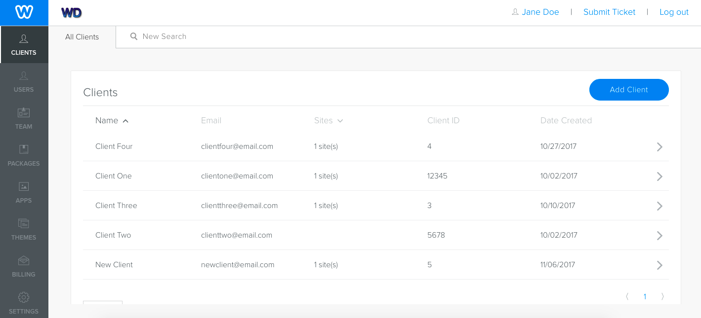
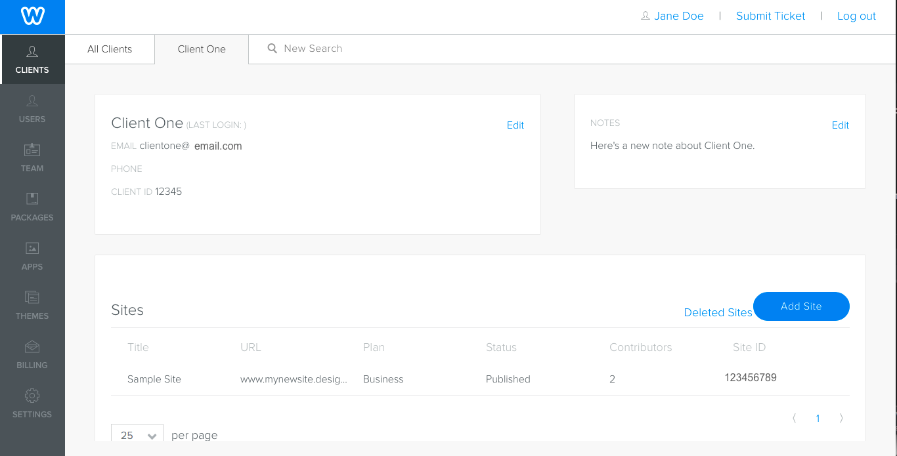
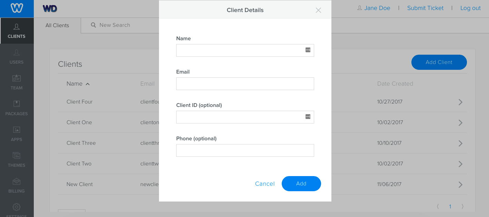

You create and manage your clients in the Cloud Admin. Along with contact information, you can manage a client's sites and their access to functionality on those sites.
You create and manage your clients from the Clients tab of the Cloud Admin. Here, you can browse through a list of your clients or search for a specific client.

View clients
Clicking a client’s name leads to the Client Details page where you can manage things like their password, their sites, view activity logs, and turn test mode on and off.

Manage Clients
Create a New Client
You create a client from the Client tab of the Cloud Admin.
To create a client:
From the Client tab of the Cloud Admin, click Add Client.
Enter a name and email for your client and optional ID and phone number.

Add a client
The email must be unique to Weebly, as this is what they will use to log into the User Portal.
Once you create a client, they are assigned an ID and you’re taken to their detail page.
Manage Clients
You manage clients from the client’s detail page.
You can do the following from here:
From the Clients tab of the Cloud Admin, browse or search for the client and click their name.
Use links on the details page to take the required action. Click here to find info about creating sites for a client or here for setting contributor access.